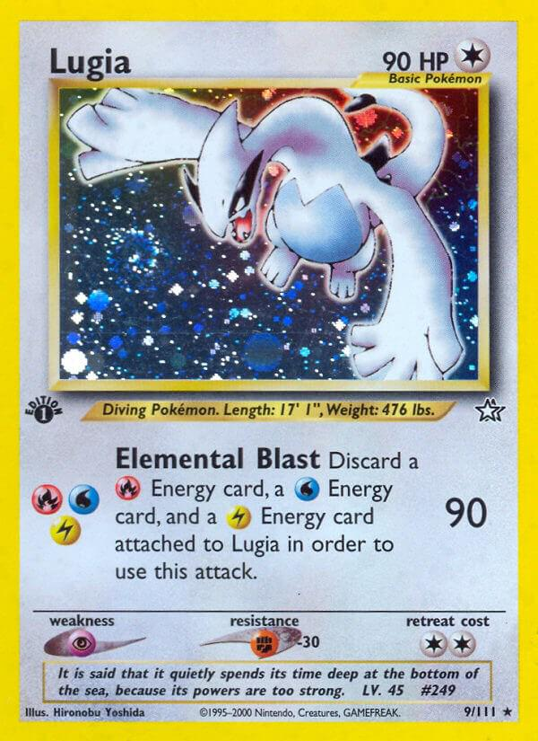

PokeBasics
PokeBasics
PokeBasics
PokeBasics
VINTAGE ERA
The Neo Era introduced the second generation of Pokémon and new card mechanics.
Explore some of the notable sets associated with this era.

Release : February 2002
Featured powerful Pokémon and rare shining cards.

Release : December 2000
Introduced Generation II Pokémon and new gameplay mechanics.

Release : September 2001
Featured legendary Pokémon and unique card artwork.
Some of the most recognisable cards from this period.

Neo Destiny

Neo Genesis

Neo Revelation